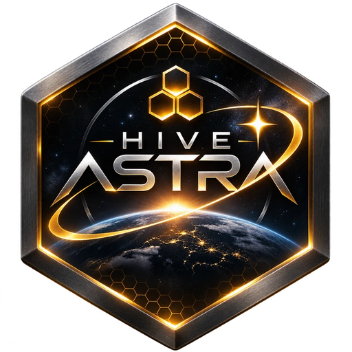

Geomagnetic activity
—Loading NOAA observations

HIVE ASTRABY CODEX HIVE LABSTHE SOLAR SYSTEM OBSERVATORY
Watch the Sun, travel between worlds, and see what’s above you tonight.
—Loading NOAA observations
—Loading NASA reports
—Loading station position
Drag to rotate · Arrow keys to turn
Illustrative horizon · Local weather and terrain are excluded
HISTORICAL REPLAY · 8–11 MAY 2024
Illustration · Sizes and distances are approximate
HIVE ACADEMY
Trace the Gannon storm and identify which observations came from the Sun and which came from Earth.
Run the storm replay →Compare planetary diameters and distances. Then open the orbital model to see which proportions the model changes.
Compare the worlds →Compare two cities at the same instant, then use the time slider to find when the Sun crosses the horizon.
Open your sky →